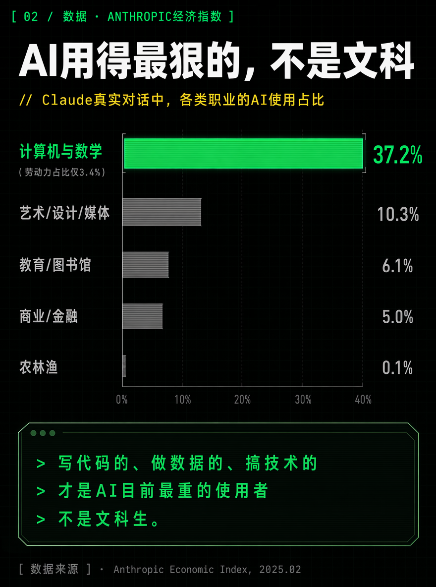
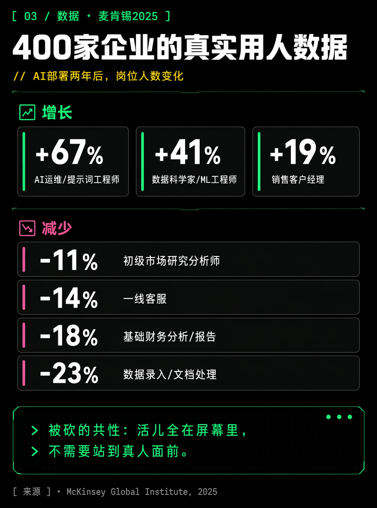
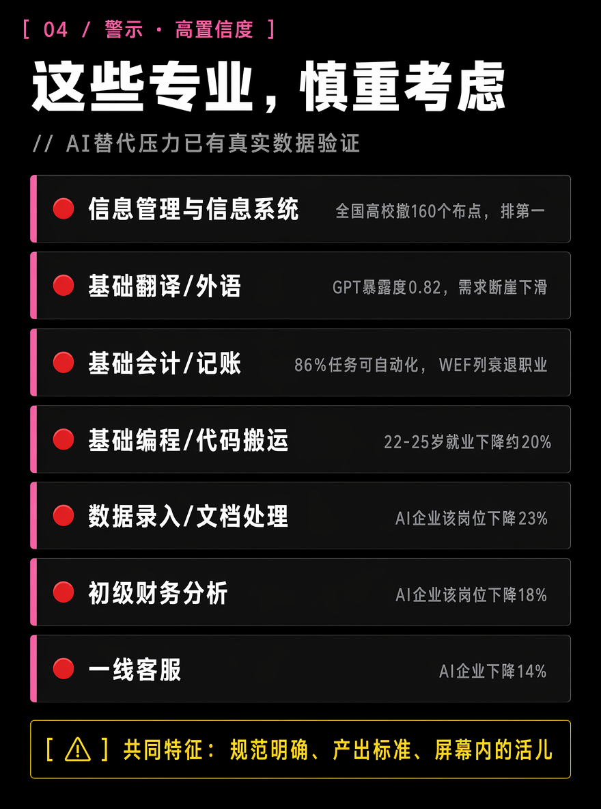
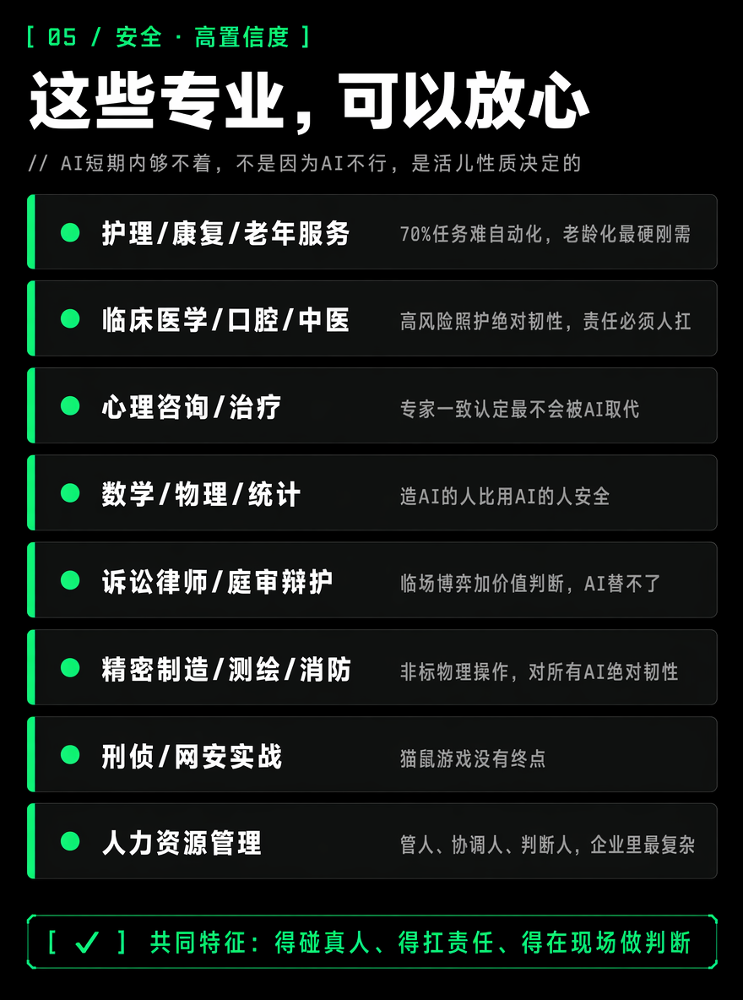
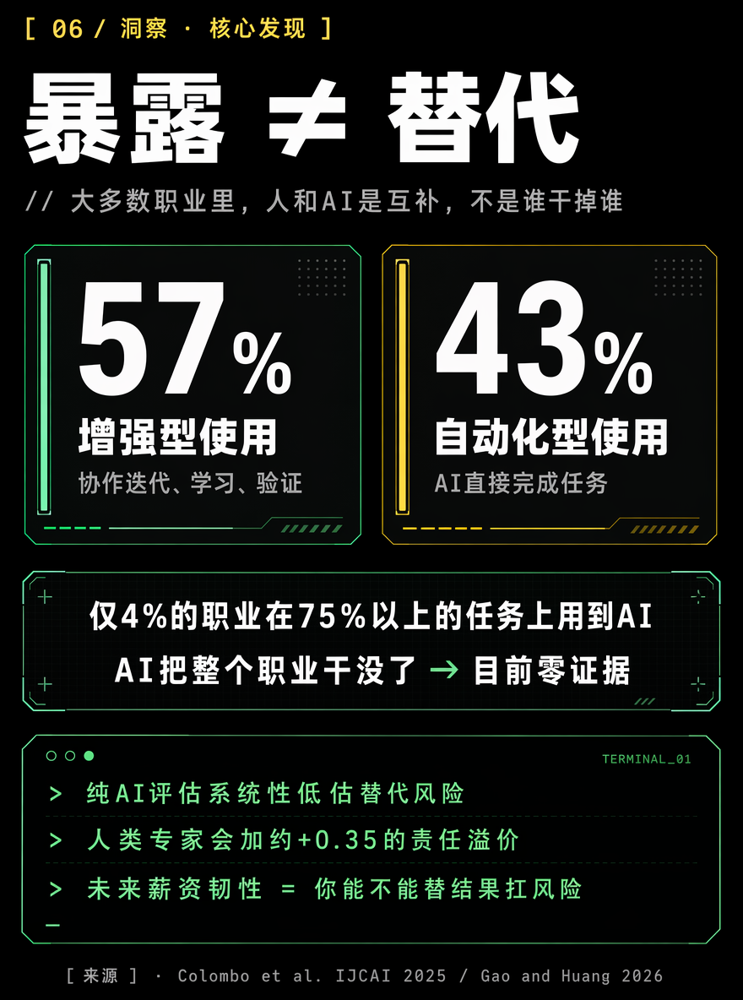
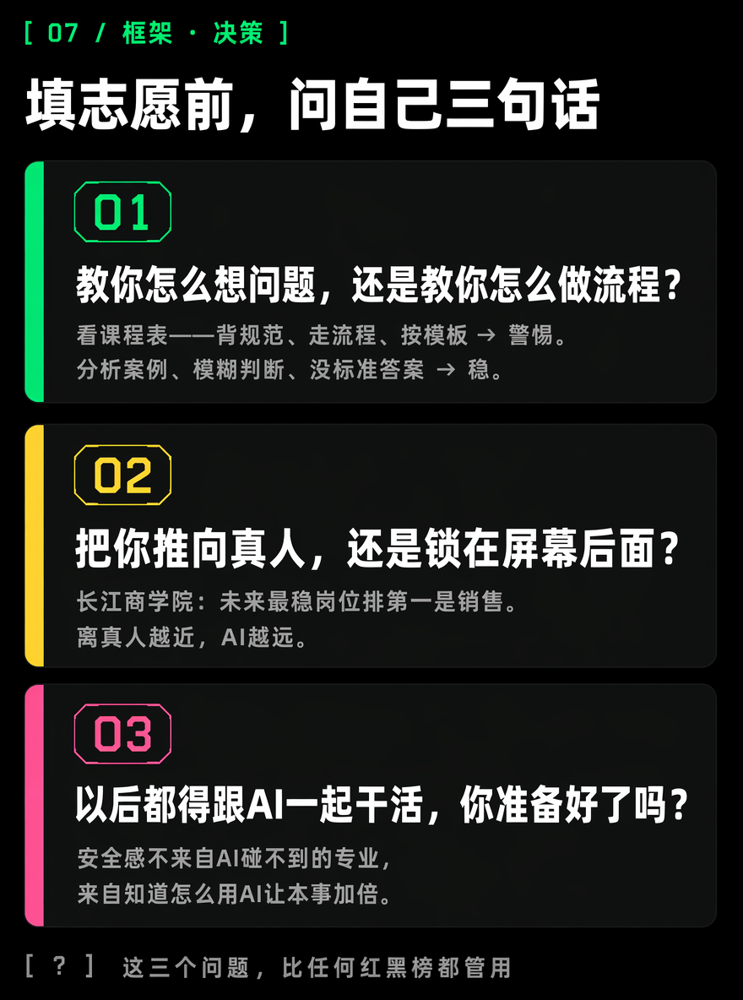

最近高考分数刚出来，好几个朋友都在给我发微信。说孩子今年参加了高考——考得好的自然开心，考得差的就更加揪心。马上要填报志愿了，但无一例外，都对报什么样的专业感到困惑，想听听我的意见。
说实话，我被问得也心里没底。所以我花了两天时间，把麦肯锡、世界经济论坛、Anthropic、Pew研究中心最新的报告还有几篇学术论文翻了一遍。
看完之后，我发现网上传的那些"AI专业红黑榜"，大部分不靠谱。
下面我说的，每一组数据都有来源。不确定的地方我会直接说"这个存疑"。

一、先说一个最违反直觉的结论
你是不是也听过这句话："AI最先干掉的肯定是文科生，学好数理化，走遍天下都不怕。"
这个说法不是全错，但它把问题简化到危险的程度。
我查到一个数据，当时看完愣了半分钟。
Anthropic——你手机上的Claude就是他们做的——2025年初发布了一份报告，分析了平台上几千万条真实对话，看哪些职业的人正在被AI替代。
第一名是谁？
计算机和数学类职业，占了全部AI工作对话的37.2%。而这类人在全美劳动力里只占3.4%。
换句话说，AI现在替代最厉害的，不是文科生——是写代码的、做数据的、搞技术的那帮人自己。
AI写代码、调bug、生成文档，这些活儿以前是初级程序员干的，现在AI上手了。你以为学计算机就安全？不好意思，AI先啃的就是你这一块。

再看麦肯锡2025年追了400家企业的真实用人数据，AI用上两年以后，哪些岗位被砍了？
数据录入少了23%。基础财务分析少了18%。一线客服少了14%。初级研究分析少了11%。
这些岗位的共同点是什么？不是"文科"——是你的活儿全在屏幕里面。信息进，信息出，不需要站到真人面前。

同期呢？需要跟人打交道的岗位反而在涨。AI辅助的销售经理涨了19%，复杂问题客户经理涨了12%。
所以不是"学文危险、学理安全"。是——你的工作离真人越远、离屏幕越近，AI离你就越近。
还有个事更扎心。斯坦福大学的研究人员发现，22到25岁的年轻人，在高AI暴露的职业里就业已经掉了6%-13%。最惨的是初级软件工程师——从2022年底到现在，22到25岁的就业掉了将近20%。但35岁以上的老手呢？同样类型的岗位，就业还在涨。
你品品。AI不是不吃编程。它是先吃最嫩的——初级岗位，任务清楚、标准明确、不需要太多判断。能搞定复杂系统、能跟业务方撕需求的老手，目前还没事。
二、好了，说点实用的。到底哪些专业要慎重，哪些可以放心报？
我把几份报告和论文的数据交叉比对了一遍，拉了两张清单。
先说明：这不是算命，是我根据现有数据做的最诚恳的判断。每一条都标了证据强弱——🔴强就是数据已经验证过了，🟡中是暴露高但有其他因素在减速。


光看表有一个问题。你会注意到"数学/物理/统计"和"基础编程"明明都是理科，一个在安心区一个在慎重区。
差别在哪？任务类型。
基础编程每天干嘛？写接口、改bug、调样式。规则清楚，输入输出都在屏幕里，训练数据满大街都是——AI学个90分不难。
学数学每天干嘛？面对一团混乱的未知，想办法把它定义成一个可以回答的问题。AI现阶段最怕的就是这个——没人告诉它"问题是什么"的时候，它就歇菜了。
所以，不是文科vs理科。是"定义问题的能力"vs"执行标准流程的能力"。你的专业教你哪个，比专业叫什么名字重要得多。

三、所以填志愿的时候，我问了自己三个问题，也分享给你

第一句：这个专业，是教你怎么"想问题"，还是教你怎么"做流程"？
你去学校官网翻课程表。如果四年大部分时间在学"背规范、走流程、按模板出结果"——警惕。这些东西AI学得比你快。如果大量时间是"讨论案例、做判断、解决没有标准答案的问题"——稳。
第二句：它把你往"真人"那边推，还是把你锁在"屏幕"后面？
长江商学院调研2000多家企业："未来三到五年什么岗位最稳？"排第一是销售，18.2%。AI能生成一百条话术，但客户签不签看的是"我信不信面前这个人"。
第三句：不管你学什么，以后都得跟AI一起干活。你准备好了吗？
安全感不是来自"找一个AI碰不到的专业"。讲实话，这种东西不存在。安全感来自"不管我学什么，我都知道怎么用AI让自己的本事加倍"。
四、最后说几句掏心窝子的话
别冲着"人工智能"四个字报专业。
今年全国高校哗啦啦新开了406个AI专业点。看着猛吧？但你冷静想——很多是去年刚搭起来的。师资从计算机系拼凑，教材今年现编，实验室设备可能还没拆箱。你孩子进去读四年，出来跟"数学系本科加自学AI的人"比，底子谁硬？
除非是头部985、真有实验室和产业合作。否则，数学、统计、物理、计算机科学这些基础学科，先打底子，研究生再切AI，稳得多。
WEF那个报告有句话我印象极深：到2030年，现在39%的核心技能会过时。不是变，是直接淘汰。所以别纠结"四年后就业率几个百分点"——没人猜得准。选那个让你能一直学新东西、一直适应变化的方向。
昨晚帮朋友分析完，他问了我最后一句："所以你给个干脆的。"
我想了想，说了一句话。今天也送给你：